c130 documentation
The c130 function draws a simple 3D airplane modelled after the Lockheed C-130.
Contents
- c130 Syntax
- c130 Description
- xyz2rpy Syntax & Description
- Example 1: Very Simple
- Example 2: Specify Colors
- Example 3: Define Location
- Example 4: Specify orientation
- Example 5: ANIMATING FLIGHT
- Example 5a: Load and plot topography
- Example 5b: Generate flight lines
- Example 5c: Specify roll, pitch, and yaw
- Example 5d: Lights, camera
- Example 5e: Animate
- Author Info
c130 Syntax
c130 c130(x,y,z) c130(...,'roll',RollDegrees) c130(...,'pitch',PitchDegrees) c130(...,'yaw',YawDegrees) c130(...,'color',AirplaneColor) c130(...,'fuselage',FuseLageColor) c130(...,'wing',WingColor) c130(...,'tailwing',TailwingColor) c130(...,'fin',FinColor) c130(...,'prop',PropellerColor) c130(...,'scale',SizeScaleFactor) c130(...,'z',ZScaleFactor) c130(...,'linestyle','LineStyle') c130(...,'linecolor',LineColor) h = c130(...)
c130 Description
c130 draws a 3D airplane.
c130(x,y,z) draws an airplane centered approximately at the location given by x,y,z, where x, y, and z must be scalar values.
c130(...,'roll',RollDegrees) specifies roll of the aircraft in degrees relative to the approximate center of gravity of the aircraft.
c130(...,'pitch',PitchDegrees) specifies pitch of the aircraft in degrees.
c130(...,'yaw',YawDegrees) specifies yaw of the aircraft in degrees in the global coordinate system. The xyz2rpy function may help with determining appropriate yaw values.
c130(...,'color',AirplaneColor) specifies a color of all surfaces of the plane. Color may be given by Matlab color name (e.g., 'red'), Matlab color abbreviation (e.g., 'r'), or RGB value (e.g., [1 0 0]). The 'color' option may be paired with options for specifying colors of specific parts of the plane. For example, c130('color','b','wing',y) creates a blue airplane with yellow wings. Default color is gray.
c130(...,'fuselage',FuselageColor) specifies fuselage color.
c130(...,'wing',WingColor) specifies wing color.
c130(...,'tailwing',TailwingColor) specifies color of horizontal stabilizer wings at the tail of the plane.
c130(...,'fin',FinColor) specifies color of the vertical stabilizer fin at the tail of the plane.
c130(...,'prop',PropellerColor) specifies propeller color.
c130(...,'scale',SizeScaleFactor) scales dimensions of the plane by some scalar factor. By default, c130 draws an airplane with dimensions which approximately match the dimensions C-130 airplane in meters. If you'd like to draw a C-130 in dimensions of feet, try c130('scale',3.281).
c130(...,'z',ZScaleFactor) scales only vertical dimensions by some scalar value. This may be useful if you're animating an airplane in a coordinate system where the vertical dimension is stretched to show relief. If your axes are not equal, consider a ZScaleFactor given by the ratio of (xlim(2)-xlim(1))/(zlim(2)-zlim(1)).
c130(...,'linestyle','LineStyle') specifies style of the lines connecting surface vertices. Default is '-', but can be set to any valid linestyle, including 'none' to show a smooth surface.
c130(...,'linecolor',LineColor) specifies edge color of lines connecting surface verticies. Default line color is black.
h = c130(...) returns handles of the 13 surface objects created by c130. Handles correspond to the following:
- h(1): main fuselage.
- h(2): nose.
- h(3): tail section of fuselage.
- h(4): top side of main wing.
- h(5): under side of main wing.
- h(6): top side of tail wing.
- h(7): under side of tail wing.
- h(8): right side of fin.
- h(9): left side of fin.
- h(10:13): propellers.
xyz2rpy Syntax & Description
As far as melon scratchers go, figuring out appropriate values of roll, pitch, and yaw can be a real honeydoodler. If you're creating an animation and you have some path along which you want the airplane to fly, the xyz2rpy function will offer values of roll, pitch, and yaw based on local slopes of the airplane path.
[roll,pitch,yaw] = xyz2rpy(x,y,z) returns roll, pitch, and yaw in degrees for a path given by global coordinates x,y,z. Inputs x, y, and z can be vectors of matching lengths, or if a value is constant (e.g., if elevation does not change), a scalar value may be used.
[roll,pitch,yaw] = xyz2rpy(x,y,z,RollFactor) exaggerates or reduces roll by RollFactor. This may be linked to speed of the aircraft. If the airplane is moving very fast, you may want to use a RollFactor much greater than 1. To fly a plane without any roll, set RollFactor to 0. RollFactor can be scalar or an array matching the dimensions of x. Default RollFactor is unity.
Example 1: Very Simple
For starters, draw a simple airplane:
c130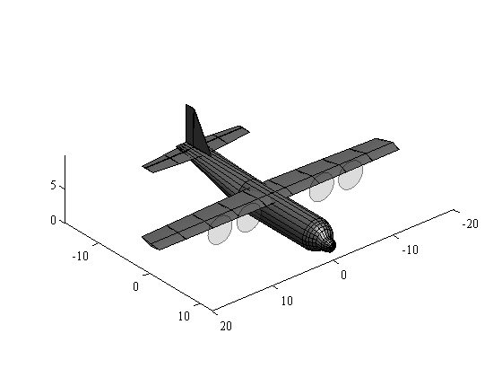
Example 2: Specify Colors
Draw a blue airplane with red wings and no edge lines:
c130('color','blue',... 'wing','red',... 'tailwing','red',... 'lines','none')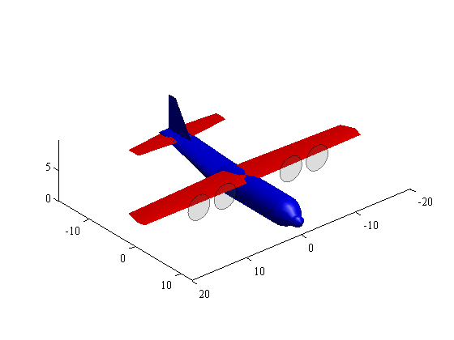
Example 3: Define Location
Draw a yellow airplane at the origin and gray airplane at x = 20, y = 10, z = 40:
c130('color','yellow') hold on; c130(20,10,40)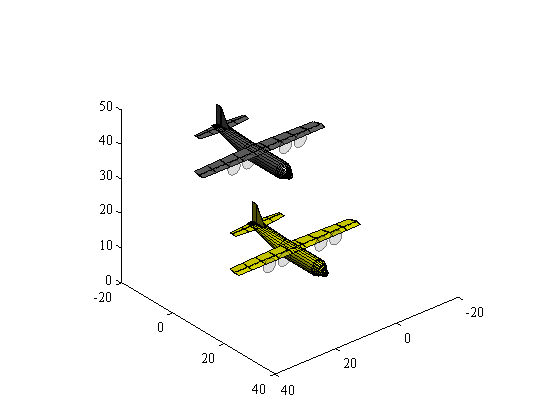
We can change that view to a top view:
view([0 90])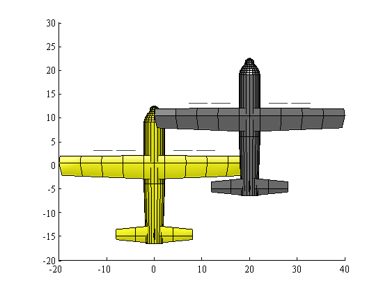
...or a side view:
view([90 0])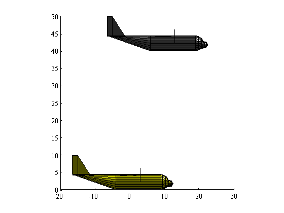
...or a front view:
view([-180 0])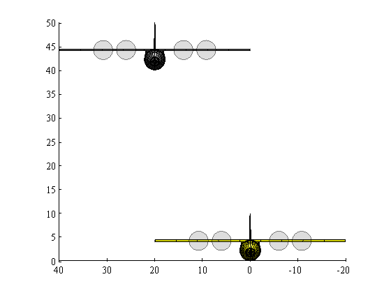
Example 4: Specify orientation
We can set roll, pitch, and yaw, either individually, or all together. Let's add a green plane rolling at 30 degrees:
c130(0,0,20,'color','g',... 'lines','none','roll',30)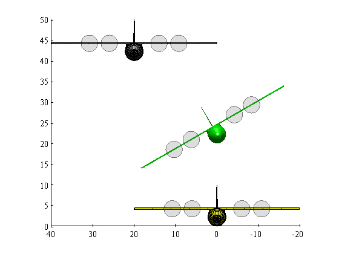
Now an orange airplane with a 20 degree pitch and a 90 degree yaw. We know from rgb that orange has RGB values of [0.9765 0.4510 0.0235].
c130(30,10,20,... 'color',[0.9765 0.4510 0.0235],... 'pitch',20,... 'yaw',90)

Return to a 3D view:
view(3)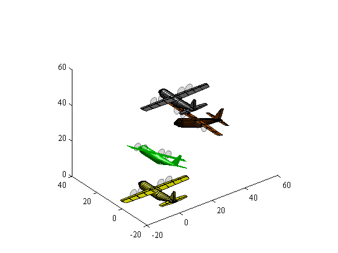
And just for kicks, let's add a big red plane, twice the size of the others:
c130(30,10,0,... 'color','red',... 'pitch',20,... 'yaw',90,... 'roll',-15,... 'scale',2) view([42 8]) axis tight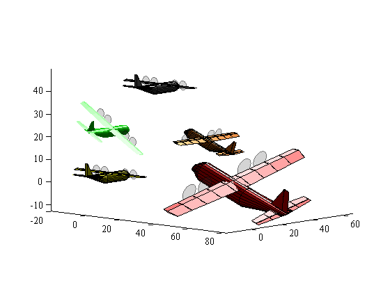
Example 5: ANIMATING FLIGHT
Example 5a: Load and plot topography
Let's start by creating a mountain for our plane to fly by. We'll use Matlab's built-in peaks data for this, and we'll tweak the data set a little bit to set negative elevations to zero and rescale X and Y to larger dimensions.
% Load and tweak peaks data: [Y,X,Z] = peaks; Z(Z<0)=0; X = flipud(X*35); Y = Y*35; Z = Z*25; % Plot peaks surface figure('pos',[50 50 900 660]) hp = surf(X,Y,Z); axis([-100 100 -100 100 0 200]) colormap(hot(256)) shading interp lighting gouraud camlight zoom(1.5) hold on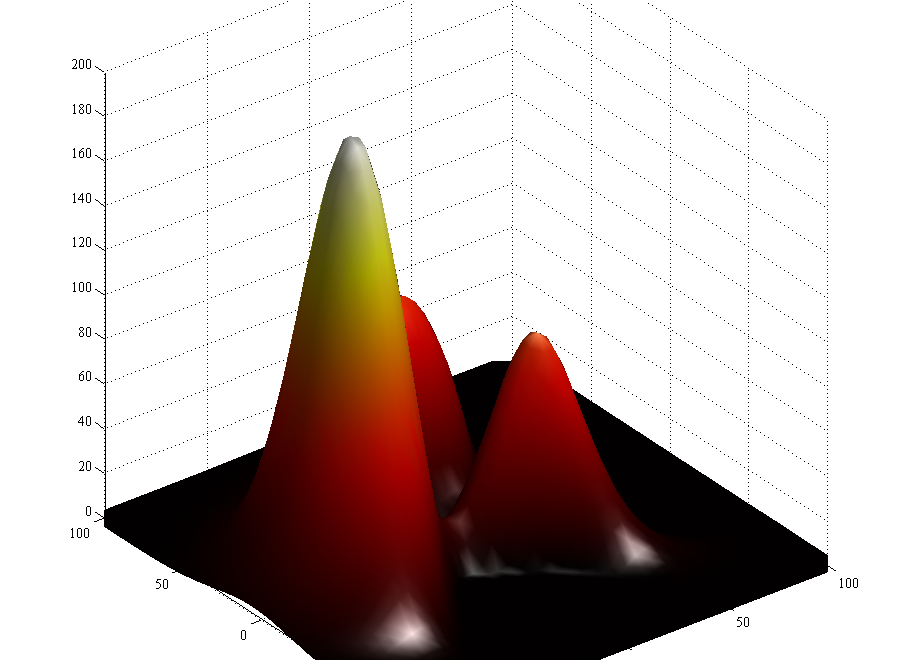
Example 5b: Generate flight lines
Now our candycornesque landscape is plotted and we can create paths for airplanes. For this example, we'll scale the paths based on the number of frames we'll ultimately want in our movie show.
frames = 300; % number of frames in our movie show. % Plane 1: Periwinkle plane flies left to right: y1 = linspace(-250,400,frames); x1 = zeros(size(y1)); z1 = 100*ones(size(y1)); path1 = plot3(x1,y1,z1,'.-','color',[0.5569 0.5098 0.9961]); % Plane 2: Red plane flies right to left: y2 = fliplr(y1); x2 = x1; z2 = z1+50; path2 = plot3(x2,y2,z2,'r.-'); % Plane 3: Gray and blue plane flies 'round the mountain: x3 = zeros(size(x2)); x3(201:273) = -80*sind((0:15:3*360)-90)-80; y3 = zeros(size(x2)); y3(1:175) = -250; y3(176:200) = linspace(-250,0,25); y3(201:273) = 80*cosd((0:15:3*360)-90); y3(274:end) = linspace(0,250,27); z3 = 120+40*cos(linspace(pi,4*pi,length(y3)))+y3/4; path3 = plot3(x3,y3,z3,'b.-'); % Set view: view([70 33]) axis([-100 100 -100 100 0 200]) grid off set(gca,'color','none')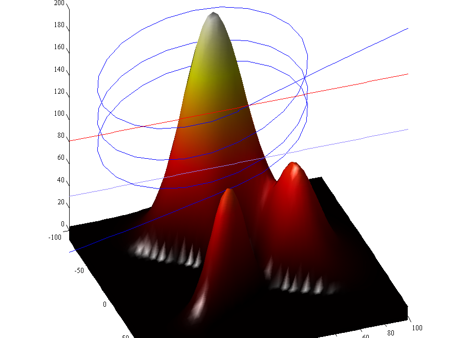
Example 5c: Specify roll, pitch, and yaw
You can specify roll, pitch and yaw in a few different ways. In the case of airplane 2, which flies from right to left (in the negative y direction), a constant yaw value of -180 is appropriate.
We can also make up values for roll, pitch, and yaw. Below, we add two barrel rolls starting at frame 185 for the red airplane.
For more complex x,y,z paths, manually defining roll, pitch, and yaw can be a real exercise in bookkeeping. For those cases, we can use xyz2rpy, which does a mediocre job of it. Sometimes xyz2rpy underestimates or overestimates roll, so let's exaggerate the roll for plane 3 by a factor of 30:
yaw2 = -180; % because the plane is flying toward -y
roll2 = zeros(size(y2));
roll2(185:210) = linspace(0,2*360,26);
[roll3,pitch3,yaw3] = xyz2rpy(x3,y3,z3,30);
Example 5d: Lights, camera
Now let's delete those flight paths and ready the camera. We'll also specify azimuth and elevation vectors for the camera.
% delete([path1 path2 path3]) % az = linspace(70,85,frames); % el = linspace(33,29,frames);
Example 5e: Animate
Now it's time to loop the animation.
for k = 1:frames
% draw periwinkle plane:
h1 = c130(x1(k),y1(k),z1(k),...
'color',[0.5569 0.5098 0.9961]); % draw red plane:
h2 = c130(x2(k),y2(k),z2(k),...
'roll',roll2(k),...
'yaw',yaw2,...
'color','red'); % draw fancy plane:
h3 = c130(x3(k),y3(k),z3(k),...
'lines','none',...
'wings','b',...
'tail','r',...
'roll',roll3(k),...
'pitch',pitch3(k),...
'yaw',yaw3(k)); % set view and take a picture:
view([az(k) el(k)])
axis([-100 100 -100 100 0 200])
drawnow % delete the planes we just drew:
delete([h1 h2 h3]);
endUsing videoWriter, the loop above produces this video:
Author Info
Chad A. Greene of the University of Texas Institute for Geophysics (UTIG) wrote c130, xyz2rpy, and this documentation file on a sunny Saturday afternoon in September, 2014.